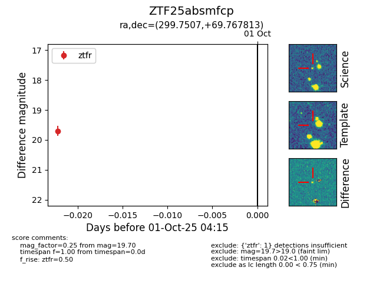

FINK: ZTF25absmfcp
Lasair: ZTF25absmfcp
ALeRCE: ZTF25absmfcp
ZTF25absmfcp (ztf,fink)
equatorial (ra, dec) = (299.7507,+69.76781)
galactic (l, b) = (102.3433,+19.78076)

last ztfr=19.70
1 ztfr detections